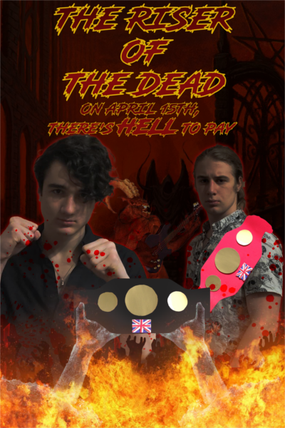

The Riser of the Dead
The Riser of the Dead
| Statistics | |
|---|---|
| Date | 15/04/2022 |
| Champion | Bagstock |
| Challenger | The Reaper |
| Belts Contested | GBC Heavyweight Belt GBC Cruiserweight Belt |
| Result | Split Decision Draw |
Official Theme Song
Frank Onkentwist and the Hundrels Ft. Candlewick - The Riser of the Dead
| Tale of the Tape | |
|---|---|
| Bagstock | The Reaper |
| Height | |
| 178cm (5ft 10in) | 182cm (6ft 0in) |
| Weight | |
| 78kg (12st 3lbs) | 66.4kg (10st 6lbs) |
| Reach | |
| 176cm (5ft 9in) | 181.5cm (5ft 11in) |
| Age | |
| 17 | 15 |
| Pre-Fight Record | |
| 1-0-0 | 0-0-0 |
The Fight
Bagstock and The Reaper stare each other down at the press conference
Before the Fight
After Bagstock defended the Cruiserweight belt at Wick, Stock, And 2 Smokin' Barrels, the GBC entered a dark chapter. The russian mafia began a campaign of violence and terror, culminating in the bombing of the GBC's offices in Wales. During 2020 and 2021 the GBC held no boxing matches or Buff Lads events. However Brick Buffpunch was able to heroically lead the GBC to a bright future in Fiji, reinstating Buff Lads for 2022 and organising a match for the now vacant Heavyweight belt.
Bagstock was the highest-ranked fighter in the division as the current Cruiserweight champion. A challenge was then made by former Lightweight champion The Reaper, who had moved up to seek new challenges.
Jabadobbins then shocked the world by returning from the dead. He had been assumed killed by the russian mafia, but had actually survived the sniper's bullet. Brick Buffpunch generously set up a twitter poll asking the GBC fans to choose the fight they wanted to see, which was won fair and square by Bagstock and The Reaper. The fight was booked as The Riser of the Dead.
The Press Conference
At the press conference the fighters remained professional. Neither revealed much information about their strategy in training or for the fight.
A moment's silence was held to commemorate the dead from the russian mafia attacks on the GBC offices.
The biggest surprise came at the end of the press conference, when it was revealed that The Reaper had been working with Candlewick to prepare for the fight.
Bagstock approaches the ring from the shed corner as smoke billows around him
The Ring Walks
The Reaper approached the ring first from the stairs corner. There was a problem with the theme songs, so he accidentally entered the ring twice. VERY impressive pyrotechnics went off all around the ring as he made his way in, sending sparks flying all over the place. The Reaper looked ready for anything as he took his position, throwing little punched in time with the music.
Then the champion approached from the shed corner with a buff cloud of smoke billowing around him. He punched the air and proceeded to get right up in The Reaper's grill, giving him a shove in the face in a show of uncharacteristic unsportsmanship.
Brick Buffpunch announced the two fighters, each weighing in at a career heaviest. In fact each one had gained approximately 18kg (2st 12lbs). Bagstock was the same height as he had been at the first fight two and a half years earlier. The Reaper had grown a significant amount, now standing at six feet even.
Round 1: Bagstock and The Reaper size each other up (Photo by A-dizzle)
Round 1
The bell rang, the two touched gloves, and the fight began.
The first round began with both fighters showing their fun side as The Reaper and Bingo did some stupid shit I don't know what they were doing but it looked like they were having a good time. The Reaper raised his hands up in the air for no reason and Bongus did some exaggerated wind up nonsense. Then the fight began in earnest.
Burgervan began by throwing two jabs with his left hand as Ringo Starr circled him. The second of these jabs glanced off the left shoulder of Rumplestiltskin as Bintulu seemed to be sizing up the opposition.
Bosnia and Herzegovina squatted down before throwing another left hand straight down the pipe. Renton from the hit 1996 movie "Trainspotting" starring Ewan McGregor answered with a left of his own at the same time. Both connected, but neither landed flush. Balsamic Vinegar was the first to land a scoring blow, with Rizzle Kicks landing his first a mere 67 milliseconds later (that's the actual number, I didn't make that up).
Bilbo Baggins continued his theme as the initiator of each engagement by throwing a jab to the body, which was blocked by Rick Astley's elbows. Now 20 seconds into the fight, Ron DeSantis threw his own testing jab at Broom Handle. It tapped harmlessly against The Archbishop of York's glove.
Boris Johnson fired back immediately with an overhand right - the first right hand of the match. An absolute haymaker of a shot, it whizzed past Rhett from Gone With the Wind's face as he stepped back to dodge it. Again the two went back to a neutral position, Borussia Dortmund seemingly not wanting to follow up on his potentially devastating blow.
The two circled each other briefly before Ron Weasley stepped forward. Action Bronson saw it coming and with split-second timing stopped Rasputin with a straight jab that landed right on the nose. Ruud Van Nistelrooy was seemingly not too hurt - a surprising feat given the immense stopping power of David Brent's thudding shot.
Again the two circled each other, with Bam Margera seemingly the more active of the two. He bounced around, while Riga, Capital of Latvia, was a little slower and more deliberate with his feet.
Benjamin Franklin threw a feint with the left and followed up with a left jab, but both fell far short of their mark. Bandersnatch then went for a ducking shot to the body, which landed. Rigatoni Arrabbiata attempted to punish him with a left to the head as Bread and Butter went down, but the punch went safely over his shoulder.
Biz Markie then threw his signature double jab combo, with the first falling a little short and the second connecting as Robbie Rotten stepped back. Bourbon seemed poised for a moment to follow up with the right, but didn't do so.
The two circled again, and as Reginald came to the corner he had nowhere to go and Banana struck with a jab to the chest which was blocked, and a cross to the body which landed. Relevant Details was clocked, but not quite flush as he continued his sideways trajectory and the blow glanced diagonally off him.
Belgium threw another testing jab, and this one connected straight to the forehead of Raphael from the Ninja Turtles.
Another jab to the body from Brisket, and this one was blocked.
Ben 10 then threw a jab-cross combination, neither hitting anything but leather and air. It seemed he was either feeling out his opponent or somewhat afraid to commit. After a brief moment of hesitation a follow-up jab was thrown, which connected.
Now a full minute into the fight Risotto threw a scoring jab, stopping Bolshevik in his tracks. There was no follow up and the two returned to neutral, each sizing the other up.
Another jab from Borneo failed to connect as Roger the Dodger simply stepped aside.
Again Brussels Sprout stepped in to throw a shot but was caught on the approach by a jab from Mark Ronson. Restitution seemed comfortable in the role of the counterpuncher, letting Birmingham come to him. So far he had lost more exchanges than he had won, but perhaps now having got the feel for his opponent's range began to have some success with this strategy.
The Real Housewives of Beverly Hills was the next to engage. He threw a tentative jab straight down the pipe, which met leather. Bitch Tits moved his head in a circle for no reason at all except that he probably saw Canelo do it once and thought it looked cool.
Bongo Drums threw another double jab combo to the body, the second of these blows finding its target. The damage however was minimal. Big the Cat then threw two feints, but it wasn't really clear whether he had intended them to be feints.
Now halfway into the round, Boseiju threw a low jab and connected. Run DMC tried his counterpunch to the head, but fell short. A true game of chess the match had turned out to be, with each boxer anticipating each other's anticipation of each other's moves.
Bishop of LLandaf then continued to elevate his gameplan above that of us mere mortals as he switched up his timing, making it seem like he was going for a low jab then actually shooting it straight down the middle of Richard Madeley's guard. To his credit Romford, Essex showed an absolute chin of granite as he ate the punch like it was nothing.
Bent Spoon again went in with two jabs. Crikey, it's the Rozzers! again stepped back and avoided them.
The Ring Magazine threw a tentative jab which fell short of its target. Bollywood stepped back as if faking a dodge before slamming on the gas pedal with a left hand to the stomach.
Boron again tried his 1-2 jab combo but excellent head movement by Risk: The Game of Strategic Conquest meant that they both fell inches short. After a step back a third jab found its mark.
Brindlesnick threw a low jab and it glanced off Rip Van Winkle's gloves.
Rum Punch stepped in to throw a jab, but Bangladesh answered with his own. The two struck each other at the exact same moment with seemingly equal force.
Bonsai again engaged, throwing a feint with the left then a jab. It glanced off Rwanda's shoulder. Bellend paused for a second and threw a low jab, but couldn't find the range he needed.
Richmond, Virginia began to get more risky with his attack, moving forward into the oncoming tempest that was Bagstock. Reaper threw a jab, but Bagstock answered with an overhand right that clipped Reaper on the side of the head. Again a trade, but Reaper taking the heavier blow. Bagstock attempted to capitalise with another jab to the face, but The Reaper's chin was not to be fucked with and he recovered in time to step away.
| Round 1 Statistics | Bagstock | The Reaper |
|---|---|---|
| Punches Thrown | 45 | 12 |
| Punches Landed | 18 | 5 |
| % Landed | 40% | 41% |
At the absolute slightest sign of The Reaper coming forward Bingus threw a jab. It was blocked but The Reaper was stopped in his tracks. Bagstock threw another low jab, which was nimbly avoided.
The Reaper circled in and was caught by a jab. He threw a jab of his own. Showing fantastic ring awareness Bagstock didn't react, simply allowing it to sail past him.
Another feint-jab combo with from Bagstock and another miss. The Reaper feinted as if he was going to throw a left hook, and Bagstock visibly reacted.
The Reaper came forward with an uncommitted jab, and Bagstock answered with his own, which missed. Bingo then went low and slammed a hard one into the kidney of The Reaper.
Another two jabs fell short from Bingo.
Bagstock feinted with the left and then delivered an absolutely devastating right cross with the force of a thousand suns to The Reaper's stomach. Reaper jabbed him in the face at the same time, but again after this trade the heavier blow was taken by The Reaper.
As the bell rang for the end of the first round, Bagstock drove one last jab home into the nose of The Reaper for luck.
At the end of the round both fighters chose to stand in their respective corners. The Tondu Garden Arena was eerily silent as neither fighter and nobody in the audience said a word.
The Judges Opinions After Round 1
Bagstock had clearly been the busier of the two fighters in round one, throwing 45 punches and landing 18, with a respectable accuracy of 40%. The Reaper had thrown 12 punches and landed 5, on paper the more accurate of the two at 41%. However the absolute insane workrate of Bagstock was not to be fucked with.
Rock Kickass and Candlewick scored this round 10-9 to Bagstock. A-dizzle had it 10-9 in favour of The Reaper.
Candlewick's notes reveal that he thought Bagstock was "more aggro out the gate" and that round was won by "Bigstick easy".
| Rock Kickass | |
|---|---|
| The Reaper | Bagstock |
| 9 | 10 |
| Bagstock wins | |
| Candlewick | |
|---|---|
| The Reaper | Bagstock |
| 9 | 10 |
| Bagstock wins | |
| A-dizzle | |
|---|---|
| The Reaper | Bagstock |
| 10 | 9 |
| The Reaper wins | |
| Bagstock wins by majority decision |
|---|
Round 2: Bagstock clocks The Reaper with a powerful overhand right
After a tense silent break the bell rang and the two warriors touched gloves.
Bagstock was first to attempt a shot with a feint jab combo with the left, which connected with the chest of The Reaper. Reaper judged the range well and he seemed to barely notice the blow.
Bagstock stepped in again with a jab but was caught by Reaper's pinpoint counterpunch. An absolute masterclass in spacing and timing was on display.
Bagstock stepped in with a low right cross, which landed on the thigh of The Reaper. As the non-scoring blow connected, Reaper clocked Bagstock in the side of the head with a left hook.
The next exchange saw Bagstock in with a jab and The Reaper attempt to counter with a jab of his own, but Bagstock was the only one to connect. The Reaper's jab was blocked microseconds before the point of impact by Bagstock's right glove. It's important to note that each of these exchanges was quite fast and the angles made it even harder to see from the judge's table exactly who was coming off better in each exchange.
As Bagstock stepped back The Reaper threw a jab which landed just barely on the nose. Bagstock feinted, jabbed, and missed.
Bagstock stepped in with a straight left that would have made hercules quake in his boots. The Reaper attempted a counterpunch but was blocked.
Bagstock got a low jab in, with The Reaper not reacting too much.
In an absolute psychological chess match, Bagstock feinted not once, but three times with the left before delivering an absolute freight train of a right hand to The Reaper's jaw. Showing an absolute chin of osmium, The Reper stepped back and flicked his hair like Justin Bieber.
Again busy with the body, Bagstock landed a low jab. A follow-up low jab glanced off The Reaper's elbow. A third low jab glanced off his elbow again.
The Reaper decided to end all this low jab nonsense by shooting a jab right down the pipe. Bagstock jabbed back and the two both landed at the same time.
The Reaper was holding his left hand a bit far away from his body. Bagstock decided to knock it away with his left and follow up with a jab, which was avoided. After that another low jab was blocked.
Bagstock applied his formula again, tapping the glove of The Reaper before launching an almighty thunderclap of an overhand right. The Reaper nimbly leaned back and avoided it, his hands falling down to his sides as he did so. He's lucky it missed because if it had hit it would have probably taken his head off.
Bagstock followed up with a jab, which connected. He tried a follow up but was caught by The Reaper's signature counterpunch.
Another low shot from Bagstock was blocked. Another two jabs from Bagstock were dodged. Bagstock continued the combination with a jab-cross combo. The right hand landed, but not flush as The Reaper leaned back.
Bagstock jabbed and The Reaper ate it. Another tap to The Reaper's glove followed by a jab was avoided.
Bagstock with the absolute energy of a hamster on ritalin threw a low jab to the body, which found its mark. Another glove tap and a feint from Bagstock saw The Reaper step back, but no punch was thrown.
Bagstock again going low tapped the glove of The Reaper and threw a straight right at his gut, which was blocked. The Reaper answered with a counter jab, which whizzed over Bagstock's shoulder.
Bagstock continued to apply pressure with a jab, which was avoided. Another low jab was blocked. An overhand right was dodged. Each one a single punch and a return to neutral, as Bagstock perhaps struggled to throw combinations.
A low jab from Bagstock failed to find its mark. The Reaper answered with a jab, which also missed.
Bagstock jabbed to the chest and The Reaper stepped just out of range. The Reaper stepped back in for a jab, but was caught on the approach by Bagstock's counterpunch before he could even throw it. Bagstock showing his ability to adapt and learn in the ring.
A feint from Bagstock and a chopping right hook, which The Reaper avoided. More feints from Bagstock. Another right. All met nothing but air.
Continuing the pressure, Bagstock jabbed twice and both hit. The Reaper began to hold his hands up to the sides, almost an amused expression on his face. He was taking heavy punishment, yet seemed completely unfazed. Bagstock absolutely taking none of his shit threw another cross, which went wide.
Bagstock approached with a feint. Then another. Then another. Each time he got closer to The Reaper. Then when The Reaper least expected it, Bagstock unloaded an overhand right that, if this were a game of bowling, would have been a strike. How The Reaper took that punch and continued to live, let alone continue the fight, is beyond the comprehension of us mere mortals.
The combination continued as Bagstock threw another right, which was blocked. The Reaper answered with a left, also blocked.
After the two returned to neutral, Bagstock took a few seconds to catch his breath, then threw a low jab, which was blocked.
The Reaper stepped in with a jab, but Bagstock counterpunched. The Reaper only just found his range, while Bagstock only just missed. All of a sudden on the offensive, The Reaper stepped forward with a right, which Bagstock ducked. While his head was down in the ducking position, The Reaper threw a left uppercut which caught Bagstock straight on the temple. The absolute thwack the punch made as it impacted into Bagstock's face rings forever in my ears.
| Round 2 Statistics | Bagstock | The Reaper |
|---|---|---|
| Punches Thrown | 45 | 14 |
| Punches Landed | 16 | 7 |
| % Landed | 35.5% | 50% |
The Reaper continued to come forward with a jab but was caught with the counter. Bagstock threw a right hook but it was avoided. The Reaper pushed forward again and was caught with a jab.
A right feint and a left jab from Bagstock both failed to find their mark. Just as the bell rang, Bagstock threw a final jab which was blocked. The two fighters returned to their corners, touching gloves as they did so.
Bagstock had remained the busier of the two during that round, again throwing many more punched than The Reaper. However the sniper-like accuracy and granite chin of The Reaper were not to be fucked with. It remained to be seen who would triumph in this absolute clash of the titans.
The right side of Bagstock's face was visibly red during the break, though neither of the two fighters showed signs of real pain or injury. The Reaper shifted from one foot to the other and awaited the next round. Bagstock's hair was beginning to get looser.
The Judes Opinions After Round 2
A-dizzle and Candlewick scored this round 10-9 to Bagstock. Rock Kickass had it 10-9 in favour of The Reaper.
Candlewick's notes reveal that he thought Bagstock won the round, but he thought it had been "deffo closer" than the first round.
| Rock Kickass | |
|---|---|
| The Reaper | Bagstock |
| 19 | 19 |
| Draw | |
| Candlewick | |
|---|---|
| The Reaper | Bagstock |
| 18 | 20 |
| Bagstock wins | |
| A-dizzle | |
|---|---|
| The Reaper | Bagstock |
| 19 | 19 |
| Draw | |
| Majority Draw |
|---|
Round 3: Bagstock snaps The Reaper with a jab on the approach
The third round began, with Bagstock looking perhaps a little slower to answer the bell than The Reaper. Unsurprising given his absolutely vast punch output over the last eight minutes. The two touched gloves again in a show of real sportsmanship.
The Reaper approached, looking for a shot. Bagstock answered with a low jab, which connected. The Reaper's gameplan was unaffected and he kept coming forward. Bagstock punished him with a right hook that clipped the cheek of The Reaper.
Still unaffected by this horrific punishment, The Reaper continued his relentless advance. He was like a man posessed. The next exchange was in his favour, as The Reaper shot a left hook and Bagstock tried to counter but was blocked.
Now suddenly faster on his feet, The Reaper ducked and went in with a jab. Bagstock jabbed too, and they both were hit. The Reaper continued to walk Bagstock down.
Bagstock swung with an overhand right and The Reaper dodged. He jabbed the body and connected. The Reaper kept coming forward like some kind of zombie, except with a brain. Bagstock was on the back foot as he threw a jab which met only leather.
Bagstock threw a straight right which was almost avoided but still clipped The Reaper's cheek. While The Reaper was stunned Bagstock followed up with a jab, but failed to find the distance. Another jab was blocked. Another met The Reaper's nose.
A feint and a jab from Bagstock saw The Reaper now on the back foot. He clapped his gloves together as he rallied and came forward once more.
Bagstock went in with a low right hook to The Reaper's kidney. It was blocked by his elbow. Bagstock threw a jab, which was avoided. Another low jab from Bagstock found its mark.
Still The Reaper kept coming forward, but he wasn't throwing punches. Bagstock clipped him with another right hook. A feint and a jab and Bagstock's glove again thwacked into the nose of The Reaper.
Again The Reaper seemed to smile. He was taking so much punishment, but didn't seem to care at all.
A low right from Bagstock found The Reaper's elbow. A left jab found his nose. Another jab was blocked. A jab and a cross, also blocked. A jab, avoided. And The Reaper continued to smile.
Regardless of the smiling, Bagstock was landing scoring punches. He landed another jab. He jabbed high, which was blocked, and threw a low cross, which hit. The Reaper's head came down and was met by a snapping jab. Now The Reaper's nose was looking red. Not bleeding, but certainly he'd taken some damage.
The Reaper tried to circle around Bagstock and was caught with a left hook. Bagstock followed up with a right cross, but The Reaper used his range to make him miss as he threw a counter jab over Bastock's right arm, which connected. Unfazed, Bagstock simply jabbed The Reaper in the face again. Bagstock went low and The Reaper went high, and for a moment it turned into a brawl, before the two clinched for the first and only time in this fight. Brick Buffpunch stepped in to separate the two.
At the word go Bagstock was back at it again with a jab to the body which was blocked. A right cross was batted away. A jab was blocked. Now Bagstock's long ponytail was beginning to become very loose.
Bagstock went low again with a jab and The Reaper countered with a left hook that clocked Bagstock around the temple. Bagstock came back with a high jab and The Reaper attempted the same again, but both were blocked.
Bagstock brushed his hair out of his face as The Reaper approached. The Reaper was looking for a shot, but Bagstock didn't give him time to find it as he threw a left feint and a jab, which was avoided.
The Reaper was now holding his glove against the right side of his face. Perhaps he'd been injured and was protecting it. He threw a tentative left hook, which was blocked by Bagstock. Bagstock responded with a jab to the face, which The Reaper ate like a champ.
Again The Reaper used his range to counterpunch as Bagstock went for a low jab and was caught by an overhand left from The Reaper. Another jab from Bagstock was blocked.
Bagstock's hair was becoming very loose now as he went in for another jab which The Reaper countered and hit back with a shot of his own. The Reaper kept walking a visibly tired Bagstock down and Bagstock punched him in the torso off the back foot.
Another jab from Bagstock. Blocked. Now he had his back in the corner of the ring. The Reaper clipped him with a left hook as Bagstock went low. Bagstock pushed out of the corner using his weight and momentum to escape without throwing any punches, seeming ready to clinch if needed.
Now The Reaper was the one in the corner. Bagstock threw a jab and The Reaper countered as the two traded shot for shot. Bagstock threw a jab-cross combo, the jab was blocked but the cross landed hard. Another jab was blocked. But despite all this The Reaper kept coming forward. An overhand right from Bagstock was dodged. A jab was blocked. A low jab was blocked. A high jab was too far away. Amidst the hurricane that was Bagstock, The Reaper landed a right cross right into the eye of the storm with absolute pinpoint precision.
Bagstock threw a jab, which connected. The Reaper was a microsecond too slow with the counter, missing by inches.
Bagstock came in for another jab as The Reaper circled to the the left. Bagstock missed and The Reaper clocked him with a clean left jab straight down the middle.
In the final seconds of the round Bagstock threw a left which was slipped. The two were chasing each other around looking for shots, when the bell rang for the end of the third.
| Round 3 Statistics | Bagstock | The Reaper |
|---|---|---|
| Punches Thrown | 55 | 21 |
| Punches Landed | 14 | 10 |
| % Landed | 38.2% | 71.4% |
In this round Bagstock's workrate was the highest yet, throwing 55 punches - the most ever seen in a single round of a GBC boxing event so far.
In this round despite having an accuracy nearly double that of Bagstock, Bagstock landed over twice as many scoring shots as The Reaper. However The Reaper still seemed unhurt and unfazed while Bagstock was looking more and more tired.
During this break A-dizzle gave water to the two fighters as Brick Buffpunch tried to tie Bagstock's hair back up. He had problems as the hair tie got stuck and had to be forcibly removed and replaced. Brick Buffpunch did the best job he could in the one minute available, but Bagstock's hair was not in the securest state it could have been.
The Judges Opinions After Round 3
A-dizzle and Rock Kickass had The Reaper winning this round 10-9. Candlewick scored the round 9-9 in perhaps the most contraversial scoring moment of the entire fight. He had Bagstock winning 10-9, but judged to have seen a low blow from Bagstock (This occured with 1:55 remaining on the clock, if you want to watch and judge it for yourself). This punch actually landed on the thigh of The Reaper, so the point deduction was perhaps in error. Candles however stands by his decision. You can hear his thoughts on the matter in the relevant episode of The Candlescast Candlecast Pilot: The Riser of the Dead (feat. Jabadobbins).
| Rock Kickass | |
|---|---|
| The Reaper | Bagstock |
| 29 | 28 |
| The Reaper Wins | |
| Candlewick | |
|---|---|
| The Reaper | Bagstock |
| 27 | 29 |
| Bagstock wins | |
| A-dizzle | |
|---|---|
| The Reaper | Bagstock |
| 29 | 28 |
| The Reaper Wins | |
| The Reaper wins by majority decision |
|---|
Round 4: The Reaper parries a thudding overhand right
Round 4
The bell sounded for round four and again the two warriors went into combat. Now this was the longest fight in GBC history.
Bagstock was first to throw, with a pawing jab that The Reaper dodged. Bagstock jabbed the body and The Reaper countered with a shot to the head. The Reaper continued to walk Bagstock down, picking his shot and throwing a left hook to the head, which caught Bagstock. Bingo jabbed and missed. He jabbed again - another trade. The Reaper jabbed and Bagstock dodged. Another low shot found its mark. And still The Reaper kept coming forward.
Bagstock went low again with two shots. The Reaper caught him on the top of the head with the counterpunch. The Reaper dodged another jab. As the two circled each other, Bagstock was panting. The Reaper looked as fresh as he had been at the start of round one.
As Bagstock walked backwards The Reaper threw a left hook, which was blocked. Now Bagstock was on the offensive, throwing a feint and a jab and forcing The Reaper onto the back foot. An overhand right and a jab both failed to find their targets.
Bagstock dipped low and missed. The Reaper tried to shoot for the head but was a little too slow. Bagstock went for a shot with the left, but was blocked. Another, with the same result. Still The Reaper marched grimly forward.
Now backed into a corner, Bagstock launched a powerful overhand right, which was parried. He followed up with the left, which was narrowly avoided. Another with the left met leather.
Now The Reaper was bouncing around the ring, seemingly endlessly energetic as Bagstock continued to pant as he was backed into a corner. Bagstock snapped in with the left, but The Reaper used his reach to just narrowly counter the shot and chip in one of his own. Bagstock got out of the corner, but The Reaper was on him like a shot. Bagstock went in with the right but it was parried again.
Two more shots with the left from Bagstock were blocked and slipped, but the right cross follow-up found its mark as The Reaper's back slammed into a fence. Bagstock threw another with the right, but The Reaper ducked it. Bagstock was now on the attack, and The Reaper found his back to the wall as he tried to shimmy to the side and get away.
Bagstock threw a jab and The Reaper ducked it. The Reaper worked his way around Bagstock and out of the corner, and Bagstock threw a left which was blocked.
Circling each other once more, the two fighters sized each other up. Bagstock went in with the right and The Reaper avoided it and met his cross with a jab to the face. Not allowing this to faze him, Bagstock shot another jab, which was blocked. Now The Reaper's back was to the wall again.
Bagstock let the pressure off for a split second, enough for The Reaper to get away. He went in with a low jab and The Reaper countered with a left to the head and the two both landed. They returned to neutral and The Reaper was the next to throw with a left hook just barely over the top of Bagstock's gloves. A follow-up jab was blocked.
The Reaper continued to come forward and Bagstock went back. After some nifty footwork Bagstock threw a jab and The Reaper countered - both hit home.
The Reaper danced around as Bagstock tried to anticipate his next move. A left hook from The Reaper was blocked. Bagstock answered immediately with the right and The Reaper with a jab and the two traded. The Reaper landed a jab that was not quite blocked. Another jab from The Reaper was dodged. Bagstock went low, looking like a big uppercut was coming, but no such punch happened. The Reaper circled around his man and shot another jab straight down the middle of Bagstock's guard. An then another, which Bagstock tried to counter but couldn't find the range. And then another jab from The Reaper followed by a fake out with the right that caused Bagstock to flinch.
| Round 4 Statistics | Bagstock | The Reaper |
|---|---|---|
| Punches Thrown | 47 | 25 |
| Punches Landed | 15 | 17 |
| % Landed | 31.9% | 68% |
At this point the man in the park who had been watching for several minutes was probably thoroughly entertained. The Reaper's hands went high as if inviting Bagstock to try to hit him. Bagstock obliged, but fell short of his target. The two briefly circled each other, and Bagstock landed a clean jab. The Reaper regained his composure and shot a jab of his own, which clipped Bagstock as he tried to dodge.
On the back foot now, Bagstock fired off a right hand that was like a shot from a cannon, which The Reaper thankfully dodged or we'd all be attending his funeral right now. He went for another jab and caught The Reaper in the left eye. Now Bagstock was panting a bit more heavily, as The Reaper was dancing around the ring and smiling. After a small standoff The Reaper threw a left and was blocked. He threw again and Bagstock was just about too slow to block it. Bagstock answered with an overhand right which The Reaper leaned back and dodged.
Bagstock went for a low jab and was caught with a counterjab. He went for an overhand right and just barely clipped The Reaper. He jabbed and caught The Reaper flush on the nose. Now in the final seconds of the round, Bagstock was putting everything on the table. He shot another jab and connected. Even after all this The Reaper kept coming forward. Bagstock shot again and missed. A cross from Bagstock - anothre miss. Another jab - blocked. Another cross - avoided.
Bagstock backed The Reaper into a corner and threw a jab, which was just out of range. The Reaper ducked the follow-up right cross. With his back to the fence The Reaper was clipped with a small left hook to the chest while escaping. Bagstock didn't let up. He threw a right, which was dodged. Just then, while he was chasing The Reaper across the ring, the bell rang for the end of round four.
The Judges Opinions After Round 4
A-dizzle and Candles had this one 10-9 to The Reaper, while Rock Kickass saw it as a 10-9 win for Bagstock. Candles's notes describe this round as "Very close. Very."
| Rock Kickass | |
|---|---|
| The Reaper | Bagstock |
| 38 | 38 |
| The Reaper Wins | |
| Candlewick | |
|---|---|
| The Reaper | Bagstock |
| 37 | 38 |
| Bagstock wins | |
| A-dizzle | |
|---|---|
| The Reaper | Bagstock |
| 39 | 37 |
| The Reaper Wins | |
| Split Decision Draw |
|---|
Round 5: The two fighters trade epic blows. What happens when an irresistible force meets an immovable object?
Round 5
Bingus drank some water and stood there panting. The Reaper stared him down from the other side of the garden. This could be the first GBC boxing match ever to go the distance. The world held its collective breath as the two fighters answered the bell for the final round.
In came Bagstock with a jab to the chest. Blocked. Bagstock threw a right, but so did The Reaper and the two both caught each other at the same time. The Reaper went for another with the right, but Bagstock got under it and answered with the left. Bagstock ducked low and drove his body up into The Reaper. It seemed like he was trying to make it into a wrestling match. He pushed The Reaper into the corner and threw a jab, which was countered with a right from The Reaper.
Another jab from Bagstock was blocked. And another. And a third. The Reaper was dancing around, still light on his feet at this late stage of the game. Was this a sign that he'd correctly paced himself, or was it a sign that he should have worked harder in the earlier rounds while he had the energy to do so?
A right hand from Bagstock was dodged. Bagstock jabbed and The Reaper tried to counter, but both missed. Another jab out of range for Bagstock. A jab to the chest from Bagstock was answered by a jab from The Reaper, and neither of them landed clean.
Bagstock continued to circle and jab. He went in for the follow up cross, but The Reaper ducked and he didn't follow through. Another two jabs from Bagstock, the first missing and the second tapping The Reaper at the very end of Bagstock's reach.
Now Bagstock came in again with the jab but The Reaper got in a clean countershot to the face. Bagstock ducked, and The Reaper got a light left uppercut in to the face while he was low. Bagstock answered with a jab, which just about caught The Reaper. Another jab and a miss. A right and another dodge from The Reaper. The Reaper went for a hook but it was blocked. Now The Reaper was the one pushing the advantage. Bagstock jabbed off the back foot but it was blocked.
The Reaper kept coming forward. Bagstock swung with a pawing jab but was way too far away. A right cross, and again he was out of range. As he threw that one his face dipped down as if he was tired.
The Reaper continued his relentless approach, but Bagstock was still the one throwing the first shot most of the time. Bagstock went in with a jab and The Reaper answered with a counter and neither landed clean. By this point Bingo's hair was almost completely undone. Now a few strands of hair were beginning to block his vision.
The Reaper came in with a jab, which Bagstock answered with a cross and both connected. Bagstock tried as best he could to get the hair out of his face as he backed slowly away. Bagstock went for a low jab and was blocked. A tentative cross and another miss. A feint in with the left that was answered with a countershot from The Reaper to the side of the face. It seemed that Bagstock was giving the last round everything he had, but The Reaper was just standing there and taking it.
The two circled each other for around 10 seconds as Bagstock threw the odd feint. The Reaper put his hands up again and Bagstock caught him down low. The Reaper tried to throw a right and catch Bingo, but couldn't find the range. Now only 90 seconds remainded on the final round of the fight.
Bagstock, now panting even harder, threw a jab which was blocked. A feint, then another jab which clipped The Reaper on the chin. Another jab, which The Reaper answered with his own shot and the two traded. Bagstock continued to back away as The Reaper walked him down. The Reaper threw a jab and was blocked. Hopping from foot to foot and feinting, The Reaper continued his approach.
Bagstock threw a jab and was blocked. Now his hair was almost completely down. Another jab opened up The Reaper's guard and a cross with the right caught The Reaper in the neck. Another jab was blocked. An overhand right was thrown, but there was nothing serious behind it and it sailed past The Reaper's head like a goldfish swims through a pond.
The Reaper made his approach looking for an opening, and Bagstock shot a jab at him, which he dodged. A right hook was blocked in absolutely textbook style by The Reaper. Another jab and a cross both failed to find their mark, but The Reaper threw an overhand left which finally completely unfastened Bagstock's hair.
Now looking like Tarzan escaped from the jungle, Bagstock threw a jab, which was dodged. He ducked low and came up with another jab, which connected. A short cross was dodged. Another cross answered with a jab and the two traded. Bagstock jabbed again as the two circeld and hit leather. Another low jab met The Reaper's elbows. A short left was attempted and stopped by a left from The Reaper.
| Round 4 Statistics | Bagstock | The Reaper |
|---|---|---|
| Punches Thrown | 52 | 18 |
| Punches Landed | 12 | 12 |
| % Landed | 23% | 66.6% |
Now Bagstock had had enough fucking around. With only 30 seconds left he decided to murder the ever living fuck out of The Reaper and came in with a jab-cross combo that clocked The Reaper right on the left cheek. He looked poised to follow up, but The Reaper was quick to recover.
Again The Reaper kept coming forward. How was this humanly possible? The man could not be stopped. Bagstock threw a jab which The Reaper answered with a counterjab. Bagstock again threw a jab and was blocked. A brief pause and a standoff, until Bagstock threw a right out of nowhere that would have killed a lesser man. The Reaper answered with a left hook that clipped Bagstock on the side of the head and ate the punch like a chicken sandwich.
Bagstock threw a left and The Reaper knocked it aside. As he did so, Bagstock stumbled on the edge of the path and nearly fell over. Showing amazing sportsmanship The Reaper let him regain his balance.
Now with only five seconds left, Bagstock threw a high jab which The Reaper blocked. A low jab, also blocked. And just as the two fighters were sizing each other up to begin their next attack, the bell rang and it was all over.
The Judges Final Scorecards
| Rock Kickass | |
| The Reaper | Bagstock |
| 9 | 10 |
|---|---|
| 10 | 9 |
| 10 | 9 |
| 9 | 10 |
| 9 | 10 |
| 47 | 48 |
| Bagstock Wins | |
| Candlewick | |
| The Reaper | Bagstock |
| 9 | 10 |
|---|---|
| 9 | 10 |
| 9 | 9 |
| 10 | 9 |
| 10 | 9 |
| 47 | 47 |
| Draw | |
| A-dizzle | |
| The Reaper | Bagstock |
| 10 | 9 |
|---|---|
| 9 | 10 |
| 10 | 9 |
| 10 | 9 |
| 9 | 10 |
| 48 | 47 |
| The Reaper Wins | |
| Split Decision Draw |
|---|
A-dizzle and Rock Kickass had the final round 10-9 in favour of Bagstock, and Candlewick had it 10-9 to The Reaper. Candles' notes reveal that he thought the round was "fucking close".
For the final scores, Rock Kickass had Bagstock winning the fight by one point. Candlewick had it even. A-dizzle had The Reaper winning by one point. With the judges unable to come to a decision, the match was ruled a draw by split decision.
Judging Controvery
The judging was inconsistent - there was no single round that all three judges scored the same way. The GBC feels that this is a problem moving forward and would like to reassure fans that the standard of judging will improve by the next fight.
As the only judge to deduct a point and the only judge to rule the match a draw, some felt that Candlewick was ultimately the reason for the indecisive result. He deducted a point from Bagstock for a low blow he judged to have seen in round 3. Candles' scorecard also contained some notes written in the handwriting of a spider with parkinsons disease dying from a ketamine overdose. These have been reproduced below in hopes that they might help understand his decision:


The Aftermath
Upon hearing the result, Bagstock was confused. He was heard at the time saying "I clearly won that fight". However, boxing is about impressing the judges and the judges' decisions are final. If a fighter can't get the stoppage, he has no say in the matter. Also he was salty haha loser get good scrub.
Fight analysis and retrospective
Upon close analysis of the fight video over several days, it seems that Bagstock probably should have won, but it would have been close. Popular seems to indicate that Bagstock comfortably took rounds 1 and 3, and The Reaper took round 4. Rounds 2 and 5 were closer, but arguments can be and have been made about both rounds in favour of both fighters.
Ultimately, while a draw was not the result anyone wanted to see, the result was not unreasonable.
The Future
It is as yet unclear whether a rematch will be organised - there was no rematch clause in Bagstock's contract in the event of a draw. However both camps are keen to see a decisive result and we may yet see Bagstock and The Reaper return to the ring.